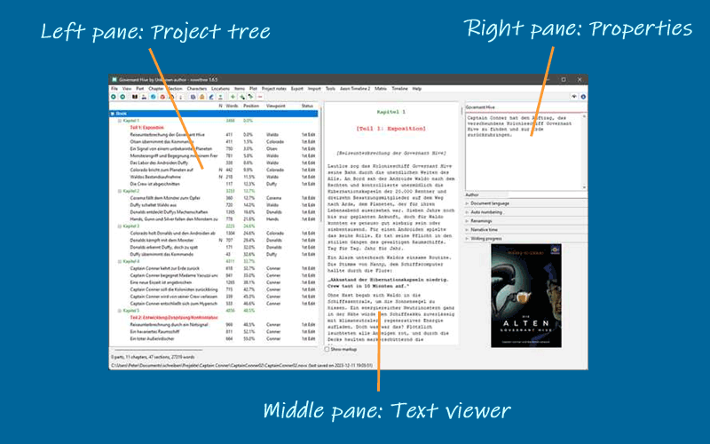
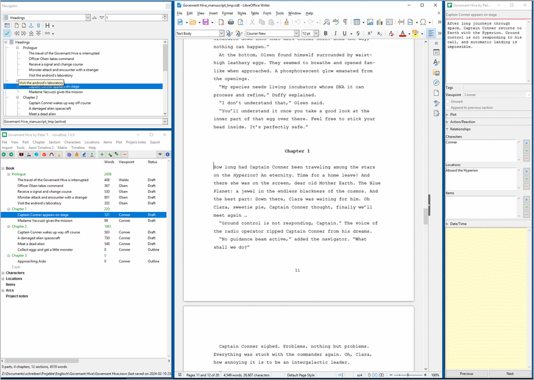

The Workspace
Overview
The novelibre workspace is divided into three panes:
Project tree
The project tree in the left pane shows the organization of the project.
The tree elements are color-coded according to the section type (see Basic concepts). Normal type sections are highlighted according to the selected coloring mode (see Options in the View menu).
The order of the columns can be changed (see Options in the View menu).
Right-clicking on a tree element opens a context menu with several options.
The type of chapters and sections, as well as the completion status of the sections are color coded and can be changed via context menu.
Project tree structure
The Book branch contains the parts, chapters, and sections that belong to the novel manuscript.
The Characters/Locations/Items branches contain descriptions of the story world’s elements that can be associated with the book’s sections.
The Plot lines branch contains the plot lines and plot points.
The Project notes branch contains project notes.
Project tree operation
- Browsing the tree
novelibre has a browsing history for the selected tree elements. This allows you to go back and forth e.g. between a section and its related characters.
 or
or Alt-Left: Go forward in history. or
or Alt-Right: Go back in history.
Hint
On Windows, the “Forward” and “Back” mouse buttons (if any) may also work.
- Skipping other kinds of nodes
With the
Altkey hold down, you can navigate directly to the next or previous tree element on the same level (e.g. section or chapter or character).Alt-Up: Go to the previous node of the same kind.Alt-Down: Go to the next node of the same kind.
Move tree elements
Drag and drop while holding down the Alt key.
Hint
With some Linux desktops, it may be necessary to
first press the mouse button, then the Alt key.
Caution
Be aware, there is no “Undo” feature.
Delete tree elements
Select the element to delete and hit the Del key.
Parts and chapters are deleted.
Sections are marked “unused” and moved to the “Trash” chapter.
Deleting a part has no effect on its subordinate chapters.
Deleting a chapter moves its sections to the “Trash” chapter.
The “Trash” chapter is created automatically, if needed.
When deleting the “Trash” chapter, all its sections are deleted.
Copy/paste tree elements
You can copy and paste the following tree elements via the system clipboard:
Parts and chapters,
sections,
stages,
plot lines,
plot points,
characters,
locations,
items,
project notes.
Elements can be transferred to and from the clipboard one by one. The element’s properties and “children” are copied, except relationships.
Via the clipboard, you can transfer these elements between different novelibre projects, or within a project.
Text viewer
The Text viewer in the middle pane shows the part/chapter/section contents with their titles as headings.
You can open or close the middle pane with the Text viewer with View > Toggle Text viewer, or
Ctrl-T, or clicking on .
.On opening, the text viewer shows the text where the tree is selected.
When changing the tree selection, the text moves along.
However, the text can be scrolled independently with the vertical scrollbar, or the mousewheel.
You can select text with the mouse, and copy it to the clipboard with
Ctrl-C.You cannot edit the text in the viewer. For this, you might want to install an editor plugin, such as nv_editor.
Section text is color-coded according to the section type (see Basic concepts).
With the Show markup checkbox, XML markup can be shown/hidden.
Properties
The Properties in the right pane show properties and metadata of the element selected in the project tree.
The project settings can be made in the Book properties view.
You can open or close the element properties window with View > Toggle Properties or
Ctrl-Alt-T, or clicking on .
.On opening, the windows shows the editable properties of the selected element.
You can detach or dock the element properties window with View > Detach/Dock Properties or
Ctrl-Alt-D.On closing the detached window, the properties are docked again.
On large screens, you can arrange novelibre and Writer with detached windows.
The following picture shows an example: Arranging LibreOffice (middle) with detached Navigator (upper left), and novelibre (lower left) with detached Properties (right)
Toolbar
The second bar from the top is the toolbar with buttons for frequently used actions.
Status bar
The second bar from the bottom is the status bar. It normally displays project statistics, such as word count. These are overwritten with program messages when necessary.
Messages on a green background indicate successful actions.
Messages on a yellow background indicate notifications or warnings.
Messages on a red background indicate errors.
Tip
You can restore the normal view at any time by clicking on the status bar.